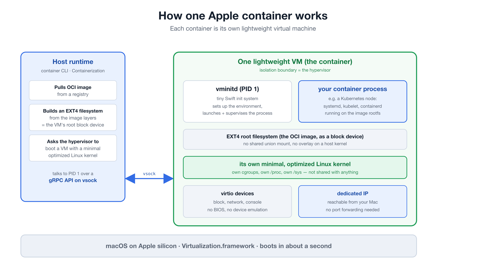
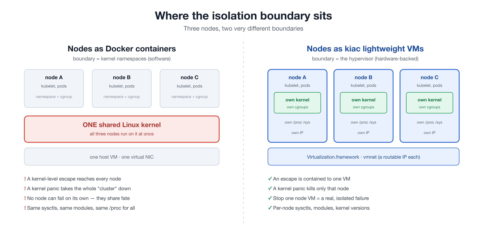

Local clusters on Apple silicon where each node boots in its own lightweight virtual machine. Run Cilium and eBPF on a Mac. Get a k3s cluster in about 30 seconds. Keep your clusters across reboots. Storage, metrics, and LoadBalancer included.
$ brew install saiyam1814/tap/kiac
Prefer Go? go install github.com/saiyam1814/kiac@latest
The same VM-per-node foundation underneath. Choose the control plane and network stack that fits the job, then paste one line.
Real kubeadm on three nodes, usable on first boot: kindnet CNI, a default StorageClass, metrics-server, and kiac-lb handing out LoadBalancer IPs.
kiac create cluster --workers 2rancher/k3s runs as PID 1 in every VM with a sqlite datastore. A 2-node cluster in about 30 seconds, around 3.7GB of host memory for the whole thing.
kiac create cluster --distro k3s --workers 1Boots nodes on a published, sha-pinned full kernel and drives the official Cilium installer. eBPF datapath, ~285MB/s cross-node pod traffic, ~1GB/s Mac-to-pod.
kiac create cluster --cni cilium --kernel fullPrereq: brew install cilium-cli
When Apple shipped container 1.0, the interesting part was underneath: every container boots a separate, minimal Linux VM on Apple's Virtualization framework. That is exactly the boundary a Kubernetes node wants.

The OCI image becomes an EXT4 root block device. No overlay mount on a shared host kernel.
Each container gets its own minimal, optimized Linux kernel, booting in about a second.
A tiny Swift init launches your process, driven by the host over a gRPC API on vsock.
virtio devices, no BIOS, and its own IP your Mac can reach. No port-forwarding.
Run "nodes" as Docker containers and they share one kernel, separated only by namespaces, a software boundary. With kiac the boundary between nodes is the hypervisor, the same one that separates virtual machines.

A container escape that reaches a shared kernel reaches every node. A VM per node contains it to one.
One kernel panic or runaway sysctl stays inside the VM that caused it, not the whole cluster.
Stop a node VM and the control plane sees NotReady, evicts, and reschedules. Actually testable.
Own /proc, /sys, modules, and sysctls. Node-level behavior is real, not simulated.
A default StorageClass, metrics-server, and node IPs your Mac can reach directly come standard on every cluster. Then it keeps going.
kiac-lb ships by default: a tiny controller inside the control-plane VM assigns node IPs to type: LoadBalancer Services in about two seconds. The edge proxy keeps large external uploads flowing.
--observability installs Prometheus and Grafana on a real LoadBalancer IP, dashboards already provisioned. Works on kubeadm, k3s, and Cilium clusters.
--gateway installs the Gateway API CRDs and Traefik with a ready-to-use Gateway, so an HTTPRoute just works.
kiac resume cluster boots the VMs back up after a host reboot and heals the control-plane IP everywhere: cert, kubeconfigs, kube-proxy. Idempotent.
kiac stop node halts a real node VM: NotReady, eviction, rescheduling. kiac start node boots it back in.
--distro k3s runs rancher/k3s as PID 1 in every VM: sqlite datastore, a 2-node cluster in about 30 seconds, about 3.7GB of host memory total.
--cni cilium --kernel full boots nodes on a published, sha-pinned kernel (VXLAN, eBPF, br_netfilter) and drives the official Cilium installer. ~285MB/s cross-node, ~1GB/s Mac-to-pod.
kiac create cluster --config cluster.yaml describes the whole cluster in one file; explicit flags override it.
kiac ui opens a local dashboard: cluster cards, live resource bars, node stop/start buttons, a per-cluster kubectl console, Grafana and Gateway links.
One Swift runtime from Apple, one Go binary from us. No Docker Desktop, no Lima, no QEMU in between.
Grab apple/container 1.0 (signed pkg from Apple). Requires an Apple silicon Mac; macOS 26+ for multi-node.
brew install saiyam1814/tap/kiac
Then check your setup: kiac doctor
kiac create cluster --workers 2
Kubernetes 1.32-1.36, then kubectl get nodes and you are flying.
From there the documentation covers networking, the k3s distro, Cilium and custom kernels, reboots and resume, observability, Gateway API, node chaos, the dashboard, and every CLI flag.